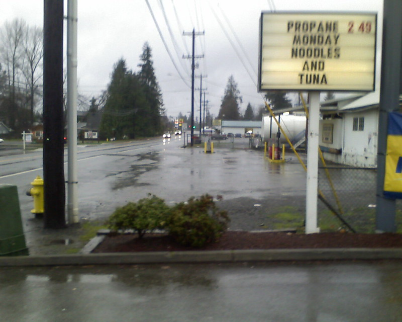

Tuna Casserole

Description
Oh man, rainy day comfort food in a 9 x 13" dish. "Cheese and fish?", you might exclaim, "well that sounds awful!" But I dissent!
Noodles, vegetables, and canned tuna fish are baked together in a creamy sauce and topped with crispy potato chips.
Makes 8 servings
Ingredients
- 3 cups cooked noodles (wide egg noodles are fine, or macaroni)
- 1 TB butter
- 1 small onion, diced
- 2 stalks celery, diced
- 1 cup frozen peas, defrosted
- 1 can tuna (5-6 oz, drained)
- 10.5 oz can of cream of mushroom soup
- 1/3 cup milk
- 1 cup shredded cheddar cheese
- 2 or 3 cups of potato chips, crushed
- 1 TB butter, melted
- 1/4 cup grated parmesan cheese
Steps
- Preheat oven to 450°F
- Cook noodles al dente according to package directions. Drain & rinse.
- In empty noodle pot, cook onion and celery in butter until tender, about 5 mins.
- Once tender, turn off heat and add the drained noodles, peas, soup, milk, cheese, and tuna to pot. Mix well.
- Dump everything into a 9 x 13" baking dish (2qts) and top with crumbled potato chips, parm, and melted butter.
- Bake 18-20 minutes until bubbly and the potato chips are starting to brown.
- Let cool 10 minutes before serving.